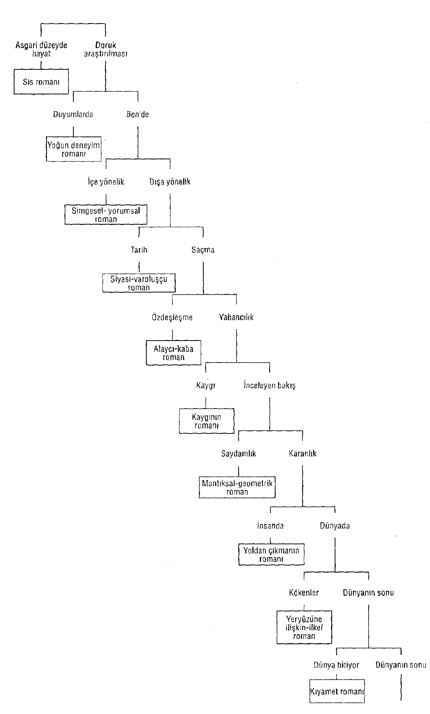

Bir Kış Gecesi Eğer Bir Yolcu ilk olarak 1979 Haziranında Ei- naudi Yayınevi tarafından yayımlandı. Kitabın çıkmasından sonra Calvino pek çok gazete ve dergiyle söyleşi yaptı. Kitabın yapısı ve anlamı üzerinde düşünmek ve tartışmak için en doğru fırsat ona eleştirmen Angelo Guglielmi tarafından sunuldu: Calvino 1979 Aralık ayında Alfabeta aylık dergisinde "Eğer Bir Kış Gecesi Bir Anlatıcı" adıyla şu sunumu yaptı:
Sevgili Angelo Guglielmi, "bu noktada Calvino'ya iki sorum olacak" diye yazıyorsun, ama Alfabeta dergisinin 6. sayısında "Italo Calvino'ya Sorular" başlıklı yazında benim Yolcu'mla ilgili yönelttiğin gizli ya da açık pek çok soru var. Seni elimde geldiğince yanıtlamaya çalışacağım.
Yazının soru sormayan bölümünden başlayacağım; burada sözlerimiz başlangıçta aynı yönde ilerliyor, ama daha sonra bazı görüşler yüzünden yollarımız çatallanarak birbirinden uzaklaşıyor. Kitabı son derece sadık bir yaklaşımla tanıtıyorsun ve birbiri ardına sunulan on romanı okura belirgin bir biçimde açıklıyorsun:
"... Bir romanda gerçeklik sis gibi ele geçirilemez bir özellik taşır; bir başkasında konular fazlasıyla cismanilik ve cinsellik yüklüdür; bir üçüncüde kazanan, zihinsel eylemleri inceleme yaklaşımı oluyor; bir başkasında tarihe, siyasete ve eyleme gönderme yapan varoluşsal bir gerilim söz konusudur; gene bir başkasında son derece kaba bir şiddet yaşanır, bir başkasında ise sıkıntı ve kaygı yüzünden dayanılması güç bir duygu yükselir. Ve sonra bir erotik-yoldan çıkmış, bir yeryüzüne ilişkin-ilkel ve son olarak bir de kıyamet habercisi roman vardır[1]
Bu on 'başlagıç'ı tanımlamak için eleştirmenlerin büyük bir bölümü olası modeller ve kaynaklar arama yoluna giderlerken (ve bu yazar listelerinde genellikle hiç aklıma gelmeyen adlar belirdi; bu şimdiye dek pek keşfedilmemiş bir alana dikkat çekti: Farklı metinler arasında zihinsel bağlantılar: Bir metin hangi yollarla zihnimizde bir başka metinle bağdaştırılır ya da benzetilir) sen benim yolumu izledin; bana her seferinde biçemle ve dünyayla kurulan ilişkiyle ilgili bir düzenleme önerdin (ardından, doğal olarak, bunun çevresinde pek çok okunmuş kitabın yankılarının yoğunlaşmasını bekliyorum); senin önerilerin on kitabın onunda da uygundu.
On kitabın onunda da mı? Daha dikkatli bir incelemeyle senin dokuz örnek verdiğini görüyorum. Nokta koyduktan sonra bir arada bir atlama olmuş ve "Ve sonra bir" diyerek başladığın cümlede aynalarla ilgili öykü söz konusu ediliyor (Birbiriyle Kesişen Çizgiler Ağında), yani burada bir mantıksal işlem veya geometrik figür hatta satranç partisi gibi işlenmiş bir anlatı örnek veriliyor. Biz de özel adlara yaklaşmak istersek bu tarz anlatının en ünlü babası olarak Poe'nun adını verebiliriz ve en güncel ve tamamlanmış varış noktası olarak Borges'i anabiliriz. Birbirinden uzak görünse bile bu iki ad arasına en romantik duygularını seyreltilmiş bir soyutluk sergileyen zihinsel iklimlere yansıtmaya çalışan; kimi zaman bunu çok değerli bilgilerle donatan ne çok yazar ekleyebiliriz.
Birbiriyle Kesişen Çizgiler Ağında öteki eleştirmenler tarafından -biraz abartılı bile olsa- çok yüceltildi, oysa sen bunu unutan tek eleştirmen oldun. Neden? Çünkü, diyorum ben, eğer sen onu da saysaydm, dönemimizi ortaya koyan edebî formlar arasında kapalı ve hesaplı bir yapıt olduğunu göz önünde bulundurmak zorunda kalacaktın ve bu kapalı ve hesaplı olma durumu güvenin tam zıt gerçekliğine işaret eden çelişkili bahis olarak (bütünlük ve tutma gücü olarak) eğreti, dengesiz, un ufak olmuş bir dünyanın anlamını iletir.
Eğer bunu kabul edersen, Yolcu kitabının bütünüyle bir ölçüde bu modele uygun düştüğünü de kabul etmek zorunda kalırsın (en başta -bu türün tipik bir örneği olarak- denetlenmesi olanaksız güçlerin evrensel komplosunun eski romansı topos' unun kullanımı gelir bu en azından Chesterton'dan sonra komik ve alegorik bir anahtar oluşturmuştur- ve bu komplo çeşitli formlar altında boy gösteren deus ex-machina tarafından yönetilir; çok basit bir buluş olarak nitelendirdiğin ve bir kınama olarak bana yönelttiğin Büyük Yalancı kahraman, bu metinde zorunlu olduğunu söylemem gereken bir malzemedir); bu modelde oyunun ilk kuralı 'hesapları tutturmak'tır (daha doğrusu: Aslında tutmadığını bilsek de, hesapları tutmuş gibi göstermektir). Senin gözünde 'hesapları tutturmak' sadece işi kolaylaştıran bir çözümdür, oysa aşağıda duran boşluğa meydan okumak - ve onu göstermek- için yapılan akrobatik bir cambazlıktır.
Sözün kısası; sen 'geometrik romanı' atlamasaydın (ya da listenden silmeseydin), sorularının ve itirazlarının bir bölümü boşlukta kalacaktı; en başta da 'bitirilememe' konusunda. (Ben 'bitirdiğim' için sen dehşete düşüyorsun ve kendine şunu soruyorsun: "Bizimkinin bir dikkatsizliği mi söz konusu?" Hayır, tam tersine çok dikkat ettim ve öyle bir hesap yaptım ki, en geleneksel "mutlu son" -erkek ve kadın kahraman evlendiler-, genel kargaşayı kucaklayan çerçeveye damgasını vursun.)
"Bitmemiş olan" üzerindeki tartışmaya gelince -genel yazın anlamında burada çok doğru şeyler söylüyorsun- öncelikle zemini yanlış anlama olasılıklarından temizlemek isterim. Özellikle iki noktanın aydınlanmasını arzu ediyorum:
1) Kitabımın merkezini oluşturan okumanın konusu ne 'yazınsal' ne 'romansı' olandır; yani -popüler ve tüketime yönelik anlatıma ait olan, ama eğitimli edebiyatın da benimsediği - belirli bir yazınsal işlemin ilk temel noktası, dikkati yaklaşmakta olanın sürekli beklentisi üzerindeki yoğunlaştırmaktır. 'Romansı' romanda, kesintiye uğrama bir travmadır, ama kurumsallaştırılabilir de (tefrika romanlarda anlatı doruk noktasında yarıda kesilir; bölümler kesilir; 'geriye dönüşler yapılır'). Kitabımda temel motif olarak yer alan anlatıların yarıda kesilmesi olgusu bu belirgin anlam ve sınır içinde yer alır ve sanatta ve edebiyatta bambaşka bir olgu olan 'bitmemiş' sorunsalı ile ilgisi yoktur. Belki şöyle söylemek daha doğru olur: Burada söz konusu olan 'bitmemiş' değil 'yarıda kesilerek bitirilmiş' olandır; 'sonu gizli ya da okunmaz olan bir bitiştir'; bu, sözcüğün hem yazınsal hem eğretileme anlamı açısından böyledir. (Sanırım bir yerlerde şöyle diyorum: "Başlayan, ama bitmeyen öyküler dünyasında yaşıyoruz.")
2) Benim roman başlangıçlarımın yarıda kesintiye uğradığı doğru mudur? Bazı eleştirmenler (Luce d' Eramo, II Manifesto, 16 Eylül) ve bazı hassas damaklı okurlar böyle olmadığını söylüyorlar: Onlar bunların bitmiş romanlar olduğunu düşünüyorlar, söylenmesi gereken her şeyin söylendiğini, eklenecek bir şey kalmadığını öne sürüyorlar. Bu noktada ben susuyorum. Bir tek şunu ifade edebilirim ki; başlangıçta niyetim yarıda kalmış romanlar yazmaktı, ya da: yarıda kalan romanlar yazınını temsil etmekti; sonra öykü olarak bağımsızca yayımlayabileceğim metinler çoğunluğu oluşturdu. (Ben bir romancıdan çok öykü yazarı olarak tanındığıma göre bu son derece doğal bir durumdu.)
"Romansı" olanın doğal adresi ve kullanıcısı 'ortalama okur'dur ve ben de bu nedenle Yolcu'nun kahramanı olarak onu seçtim. Çifte kahraman, çünkü daha sonra Erkek Okur ve Kadın Okur olarak ikiye bölünüyor. Başlangıçta ona belirgin bir kişilik ve özel zevkler yüklemedim: Rastgele ve seçmeci bir okur olabilirdi. İkincisi ise hevesli bir kadın okurdur; beklentilerini ve okumak istemediklerini açıklamayı bilir (bunları olabildiğince entelektüel olmayan terimlerle yapar, çünkü entelektüel dil kaçınılmaz olarak günlük konuşmaya sıkışır); 'kadın okur' un yüceltilmesinde çıkarsız bir tutkuyla donanmış sosyal kadın okur rolüyle gurur duyuş vardır. Bu benim inandığım bir sosyal roldür ve sadece bu kitabın değil, aynı zamanda benim işimin varsayımıdır.
Benim 'ortalama okur'u hedef almam senin en derinlemesine incelediğin konu olduğu için şu soruyu yöneltiyorsun: "Calvino bilinçsizce de olsa, Ludmilla'yı kullanarak ortalama okuru baştan mı çıkarıyor (pohpohluyor) ve kitabının gerçek okuru (müşterisi) olanlara eşsiz Ludmilla'nın olağanüstü niteliklerini ödünç mü veriyor?"
Bu cümlede benim hazmedemediğim nokta şu 'bilinçsizce de olsa’ söylemi. Bilinçsizce ne demek? Eğer Erkek Okur ile Kadın Okur'u kitabımın merkezine oturttuysam, ne yaptığımı biliyordum. Kaldı ki bir an için bile okurun (yazdıklarımdan aldığım teliflerle hayatımı sürdürdüğüme göre) satın alan kişi, kitabın pazarda satılan bir ürün olduğunu unutmam mümkün değil. Varoluşun ekonomik yönünü ve buna bağlı olan her şeyi göz önünde bulundurmadan yaşanabileceğini savunan kişi asla benim saygımı kazanamamıştır.
Her neyse, bana baştan çıkaran adam dersen, tamam; yağcı dersen tamam; panayıra çıkmış tacir dersen o da tamam, ama bana bilinçsiz dersen işte o zaman alınırım! Eğer Yolcu'da okurun (sıradan okurun) hiç beklemediği bir kitaba katılımını temsil etmek (ve bunu simgelerle anlatmak) istediysem; bütün önceki kitaplarımda da var olan istikrarlı ve bilinçli niyetimi açıkça ortaya koymaktan başka bir şey yapmadım. Burada, okuma sosyolojisi (hatta okuma siyaseti) üzerine bir konu açılabilir, ama söz konusu ettiğimiz kitabın tartışma mahiyetine uzak düşer bu.
Senin tartışma konunun bel kemiğini oluşturan iki ana soruya dönmek daha iyi olacak: 1) ben'in geride bırakılması için ben'lerin çoğaltılması yoluna gidilebilir mi? 2) olası bütün yazarlar on taneye indirgenebilir mi? (Belleğimdekileri böyle özetliyorum, ama sana yanıt verirken metnindeki bütün noktaları göz önünde bulunduracağım.)
İlk nokta için sadece şunu söyleyebilirim ki bütünlüğü, farklı dilsel olanaklar fihristi aracılığıyla izlemek bu yüzyılın edebiyatının bütün bir dilimini ortaya koyan bir işlemdir; Dublin'de yaşayan bir kişinin sıradan bir gününü, farklı tarzlarda yazılmış on sekiz bölümde ele alan romandan başlayarak buna örnek verebiliriz.
Bu seçkin örnekler, senin sözünü ettiğin o 'kullanılabilirlik hali'ne ulaşmaktan hoşlanmayacağım anlamına gelmez; "bu hal sayesinde dünyayla ilişki, doğruluğunu kabul etme terimleriyle değil araştırma biçimi olarak ele alır"; ne var ki en azından bu kitap boyunca "araştırma biçimi" benim için -kurallara uygun olarak- temelde yatan konu birliği üzerinde aynı yöne ilerleyen (ya da ışıyan) bir çoğulluk anlamına geldi. Burada kesinlikle yeni bir şey yoktu derken şunu ifade etmek istiyorum: Daha 1947 yılında, Raymond Queneau'nun yayınladığı Exercises de style içinde birkaç satırlık bir anekdot 99 farklı redaksiyonla işlenmişti.
Ben tipik romansı durum olarak şöyle açıklayabileceğim bir şema seçtim:
Birinci tekil şahıs ağzıyla anlatan erkek kahraman kendine ait olmayan bir rolü üstlenmek zorunda kalır; içine düştüğü durumda kadın kahramanın çekimine kapılır ve düşmanların ortaklaşa karanlık tehditleri ona kaçış yolu tanımaz. Temeldeki bu anlatı çekirdeğini, kitabımın sonunda, Binbir Gece'nin apokrif öykü hali olarak yer alan öyküde açıkladım, ama sanıyorum hiçbir eleştirmen (çünkü büyük bir çoğunluğu kitabın temasal bütünlüğüne vurgu yaptı) bunu bulup çıkaramadı. Kaldı ki, aynı durum çerçeve içersinde de fark edilebilir (bu durumda kahramanın kişilik buhranı bir kişiliğe sahip olmamasından; herkesin kendi 'ben'i ile özdeşleştirebileceği bir 'sen' olmaktan kaynaklanmaktadır).
Bu benim her zaman zorla kabul ettirmek istediğim oyunun kurallarından ya da contraintes'lerden biridir. "Çerçeve"ye ait her bölümde bir sonra gelecek olan roman tipinin Kadın Okur'un ağzından dile getirildiğini gördün. Üstelik her "roman" bir gereklilikten kaynaklanan bir isme sahiptir, çünkü bütün roman adları birbiri ardına okunduğunda kendi başma bir romanın giriş bölümünü oluşturacaktır. Bu başlık da gene edebî olarak anlatının konusuna anlam kattığından her "roman" Kadın Okur'un beklenti içinde olduğu başlığa uygun olacaktır; bu da kadın tarafından bir önceki bölümün akışı içinde şekillendi- rilecektir. Bütün bunları söylememin nedeni, dikkatlice bakarsan, "başka benlerle özdeşleşme" yerine, kitabın yaratıcı düzeni olan zorunlu süreçler örgüsü ile karşılaşırsın, bu ses yinelemesi Raymond Roussel tarafından kendi romansı işlemlerinde hareket ve varış noktası olarak ortaya konuyordu.
Böylece 2 numaralı soruya geliyoruz: Neden tam olarak on roman? Bunun yanıtı son derece açıktır ve birkaç paragraf sonra kendin de bunu dile getiriyorsun: "Elbette mantıklı bir sınır belirlenmeliydi"; çoğulluğun anlamını verebilmek için on iki, yedi ya da yetmiş yedi roman başlangıcı yazabilirdim. Ama sen bu yanıtı hemen dışlıyorsun: "Calvino, bir araya getirme niyetiyle, daha belirsiz bir oyuna temel hazırlıksızlığını göz önüne sermemek için on olanağı müthiş bilgelikle ortaya koyuyor."
Bu nokta üzerinde kendimi sorguladığımda kendime şu soruyu sordum: "Ne gibi bir derde soktum başımı?" Gerçekten de, bütünlük düşüncesine karşı her zaman tepki duymuşumdur; "bir araya getirme niyeti"ndeyse kendimi bulamıyorum; gene sayfalar susmuyor: Burada ben -ya da kahramanım Silas Flannery- tam olarak 'bütün olası kitaplardaki bütünlük'ten söz ediyor. Sorun burada sadece 'bütün' değil 'olası' sözcüğünde; zaten sen de bu noktada karşı çıkıyorsun; öyle ki, 2 numaralı soru gene senin tarafından hemen şöyle formüle ediliyor: "Calvino gerçekten olası olanın varolan ile örtüştüğüne inanıyor mu?" Gayet etkileyici olarak beni uyararak "olası olan sayıya gelmez, hiçbir zaman bir toplamın sonucu olmamıştır ve olası, daha çok içinde her noktanın bütünün sonsuz niteliğine katkıda bulunduğu, gözden yiten bir tür çizgidir."
Üstesinden gelebilmek için belki de kendime sormam gereken soru şudur: Peki neden bu on roman da, başka on roman değil? Son derece açıktır ki, bu on roman türünü seçmemin nedeni bana daha anlamlı görünmeleridir, bana iyi gelmeleridir, yazarken beni daha çok eğlendirmeleridir. Sürekli olarak listeye ekleyebileceğim başka roman türleri karşıma çıkıyordu, ama ya başaramamaktan korkuyordum ya da benim için yeterince güçlü bir biçimsel yarar taşımıyorlardı ya da kitabın taslağı yeterince yüklüydü ve daha fazla genişletmek istemiyordum. (Örneğin kaç kez şunu düşündüm: Neden anlatıcı olan 'ben' bir erkek olmak zorunda? Yazı neden 'dişil' olmak zorunda? Peki ama, 'dişil' bir yazı var mıdır? Yoksa her 'eril' roman tipi için 'dişil' bir eşdeğer hayal edilebilir mi?)
O halde şöyle söyleyebiliriz; benim kitabımda olası olan mutlak olası değildir; benim için olası'dır. Hatta benim için bütün olası olan değildir; örneğin edebî özyaşamöykümü yeniden ka- tetmek, daha önce yapmış olduğum anlatı türlerini yinelemek istemiyordum; benim olduğum ve yaptığım şeyin sınırında bulunan olasılıklar olmalıydı; benden dışarı bir sıçrayışla ulaşılmalıydı, olası bir sıçrayışın sınırında kalmalıydı.
İşimin bu sınırlayıcı tanımı (bana atfettiğin 'bir araya getirme niyeti'ni reddetmek için ileri sürdüm), işime her zaman eşlik etmiş olan zıt yöne teşviki göz önünde bulundurmazsam noksan kalır: Ben her zaman yapmakta olduğum işin sadece benim için değil, başkaları için de bir anlamı olup olmayacağını sordum kendime. Özellikle son aşamalarda, kitap pratikte sona erdiği ve zorunlu eklentiler son değişiklikleri engellediğinde, kavramsal olarak örgüsünün, akışının, düzeninin haklılığını kanıtlayabilecek miyim diye dert ediyordum. Sadece kişisel bir açığa kavuşturma yakalayabilmek için farklı özetler ve taslaklar denedim, ama yüzde yüz içime sinen bir çerçeve yakalayamadım.
İşte bu noktada taslağı en bilgili dostuma okuttum ve bana açıklayıp açıklayamayacağını görmek istedim. Kendisine göre kitabın birbirini izleyen silme eylemleriyle ilerlediğini ve 'kıyamet romanında' dünyanın silinmesiyle bunun tamamlandığını söyledi bana. Bu düşünceyle eşzamanlı olarak Borges'in Almotâsim’e Yaklaşma öyküsünü yeniden okumam beni, (artık bitmiş olan) kendi kitabımı da, 'gerçek roman' araştırması olabilecek bir okumaya daha ve bununla birlikte dünyaya karşı doğru tutumu takınmaya yöneltti; bu okumada, her başlamış ve yarıda kalmış 'roman' yön değiştiren bir yola tekabül ediyordu.
Bu bakış açısıyla kitap, -benim için- olumsuz anlamda bir öz- yaşamöyküsü anlamına geliyordu: Yazabileceğim, ama bir kenara bıraktığım romanlardı bunlar ve bunun yanı sıra -benim ve başkaları için- aynı biçimde tıkalı olan yollara götüren varo- luşsal duruşların gösterge kaydıydı.
Bilgili arkadaşım, Platon'un Sofist adlı yapıtında elinde olta tutan balıkçıyı tanımlamak için kullandığı yan yana uzanan iki yol örneğini hatırladı: Her vazgeçilen seçenekte, geriye kalan da kendi içinde çatallanır. Kitabın çerçevesini oluşturan bu çizginin sahip olduğu yönteme anlam kazandıracak taslaklar çizmeye başlamam için bu çağrı yeterli oldu. Sana bunlardan birini iletiyorum: Burada, hemen hemen her sefer senin seçtiğin sözcükleri kullanarak hazırladığım on romana ilişkin tanımlamalarımı bulacaksın.
Son açıklamanın ilk açıklamaya ulanabileceğini göz önünde bulundurarak, bunun döngüsel bir taslak olduğunu söyleyebilirim. Peki bir araya getirici mi? Bu anlamda, öyle olması elbette hoşuma giderdi. Bu biçimde çizilmiş, hayal kırıklığı yaratan sınırlar, beyaz bir bölgeyi çevreleseler ve buraya senin aldatıcı olmayan tek örnek olarak önerdiğin, dünyaya karşı 'onu tanımazdan gelme' davranışı yerleştirilse iyi olurdu; sen, "Dünyanın tanığı olunamaz (ya da dünya üzerine vaaz verilemez); bireysel ya da ortaklaşa her çeşit himayeden kurtulmuş ve kendi indirgenemezliğine iade edilmiş dünya, sadece tanımazdan gelinir," diyorsun.
